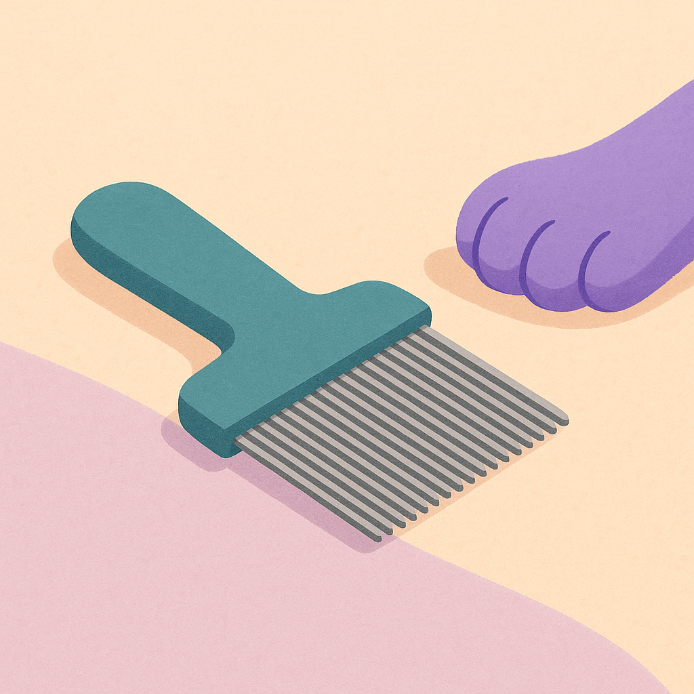
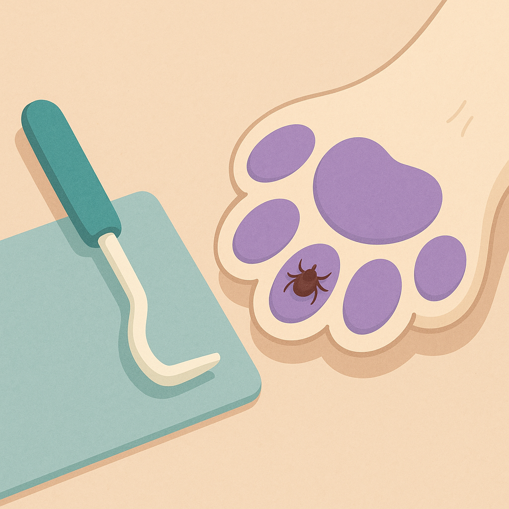

How to Protect Your Dog From Ticks, Fleas and Worms
Contents
Seasonal Parasite Calendar for UK Dogs
Parasite season in the UK isn't confined to summer. While warm months see the highest flea and tick activity, different parasites peak at different times:
Spring (March–May)
Ticks become active as temperatures rise, particularly in grass and woodland. This is the start of the "tick season" that continues until October. If your dog has been outside during winter and picked up ticks, they may be visible now. Spring is when many owners increase their tick vigilance.
Summer (June–August)
Peak season for fleas and ticks. Warm weather, long grass, and wildlife activity increase parasite prevalence. Fleas multiply rapidly in heated homes even without outdoor exposure. This is the busiest season for vets treating parasite-related issues.
Autumn (September–October)
Ticks remain active through October, especially in moorland areas. Fleas are still problematic because homes are heated. Worms become more prominent as dogs hunt and eat prey during autumn walks. October is the final peak month for tick-borne disease transmission risk.
Winter (November–February)
Outdoor ticks die off, but fleas thrive in centrally heated homes year-round. Worms remain a concern. Winter is actually when some of the highest flea populations occur indoors. It's a common misconception that fleas disappear in winter—they don't.
Key Point
UK parasite prevention isn't seasonal—it's year-round. Fleas and worms require 12-month protection. Ticks peak March–October but some survive milder winters. Most vets recommend continuous prevention rather than stopping and starting with the seasons.
Flea & Tick Treatment Options
The UK market offers three main categories of flea and tick treatment, each with different costs, convenience levels, and effectiveness:
Spot-On Treatments (Monthly)
Applied directly to your dog's skin, usually between the shoulder blades where they can't lick it off. Spot-on treatments include:
- Frontline Plus (fipronil + methoprene): £8–12 per application, applied monthly. Available at vets and online retailers like Pets at Home. Works on fleas and ticks. Some resistance reported in certain areas.
- Advocate (imidacloprid + moxidectin): £10–15 per dose, monthly application. Kills fleas on contact and also treats mites and some worms. Prescription-only from vets.
- Stronghold (fipronil): Budget alternative, £5–8 per dose. Monthly flea treatment but less effective on ticks. Commonly available online.
Tablets (Long-Acting)
Oral tablets offer longer protection without the mess of spot-ons. These are prescription-only and more expensive upfront but often better value:
- Bravecto (fluralaner): £30–45 for 12-week protection (cost: £10–15 per month equivalent). Kills fleas and ticks for 12 weeks. One dose covers 3 months, reducing reapplication hassle.
- NexGard (afoxolaner): £18–25 per monthly tablet. Specifically targets ticks and fleas. Requires monthly administration but popular with owners who prefer tablets to spot-ons.
- Comfortis (spinosad): £20–28 per tablet. Fast-acting flea killer, effective within 30 minutes. Tick protection is limited. Best as an emergency treatment for acute flea infestations.
Collars (Slow-Release)
Modern flea and tick collars release active ingredients over time:
- Seresto (imidacloprid + flumethrin): £15–20 per collar, lasts 8 months. Highly effective against both fleas and ticks. Popular choice for owners who forget monthly treatments. Can be left on continuously.
Cost Comparison
For annual parasite protection (monthly spot-on): 12 × £10 = £120 annually. Using Bravecto (4 doses per year): 4 × £35 = £140. A Seresto collar: £18 per collar (most dogs need 1 per year). Despite higher per-dose cost, collars and long-acting tablets often provide better value and compliance.

Worming Schedule & Products
Worms are transmitted through contaminated soil, raw meat, and hunting. UK vets recommend different worming schedules by age:
Puppies (8 weeks–6 months)
Worm every 2 weeks until 12 weeks old, then every 4 weeks until 6 months. Puppies are especially vulnerable to roundworm and hookworm, which can stunt growth and cause diarrhoea.
Adult Dogs (6 months+)
Minimum 4 times per year (every 3 months). Many vets recommend monthly prevention, particularly for dogs that hunt or eat raw food.
Common Worm Medications
- Drontal (praziquantel + pyrantel): £3–6 per tablet, effective against roundworms and tapeworms. Available from vets and online. Requires a prescription in many cases.
- Milbemax (milbemycin + praziquantel): £4–8 per tablet, covers hookworms, roundworms, tapeworms, and some lungworms. Slightly more comprehensive than Drontal.
- Panacur (fenbendazole): £5–10 per dose, available as granules or paste. Slower-acting but effective against most common worms.
- Combined spot-on (e.g., Advocate): Some spot-on treatments include worm coverage, reducing the need for separate tablets.
Annual Worming Cost
Minimum (4 worming doses annually): 4 × £4 = £16 per year. Monthly prevention: 12 × £4 = £48 per year. Some owners use combined flea/tick/worm products (like Advocate) which simplifies the schedule and often provides better value.
Lyme Disease & Tick-Borne Risks in the UK
Ticks in the UK can carry Lyme disease (caused by Borrelia burgdorferi bacteria). While uncommon, it's a serious concern in high-risk areas:
High-Risk Regions
- New Forest, Hampshire: Highest tick population in the UK, particularly prone to Lyme disease
- Scottish Highlands: Dense tick populations in moorland and woodland
- South Downs, Sussex: Elevated risk due to mixed terrain and wildlife
- Lake District, Cumbria: Moderate risk in fell-walking areas
Symptoms of Lyme Disease in Dogs
- Lameness or joint pain (often shifting legs)
- Fever
- Lethargy or depression
- Swollen joints (knees, hocks particularly)
- In rare cases, kidney damage
Prevention & Response
The best protection is preventing tick attachment. Use reliable flea/tick treatments like Bravecto or Seresto. If you live in a high-risk area, monthly tick checks (especially after woodland walks) are essential.
If you notice lameness or joint pain developing weeks after a walk in a high-risk area, see your vet immediately. Lyme disease is treatable with antibiotics if caught early. A blood test can confirm diagnosis.

Signs Your Dog Has Parasites
Flea Symptoms
- Excessive scratching, especially on rear end and base of tail
- Hair loss (alopecia) from over-scratching
- Red, inflamed skin or scabs
- Visible "flea dirt" (small black specks) on skin—use a flea comb to check
- Tapeworm segments in faeces (look like rice grains) or around the anus
- Flea allergy dermatitis: severe itching triggered by just one flea bite
Worm Symptoms
- Diarrhoea or loose stools
- Weight loss despite normal appetite
- Visible worms in faeces or vomit
- Pot-bellied appearance (especially in puppies)
- "Scooting" (dragging rear on the ground)
- Anal itching
- Lethargy and poor coat condition
Tick Symptoms
- Visible ticks attached to skin (often between toes, in ears, or neck)
- Hair loss where ticks are embedded
- Lameness or reluctance to exercise (from tick-borne disease)
- Fever
- Small, raised bumps on skin where ticks have fed
Important: Many dogs with parasites show no obvious symptoms. Preventive treatment is far better than waiting to see signs.
Safe Tick Removal
If you find an attached tick, removal must be done carefully. An improperly removed tick can rupture and leave mouthparts embedded, increasing infection risk.
Step-by-Step Removal
- Don't panic or squeeze the tick. Crushing it releases bacteria into your dog's bloodstream.
- Use a tick removal tool. Tick hooks or tweezers with a fine point work best. They're available online for £3–5.
- Grasp the tick as close to the skin as possible. Aim for the head/mouthparts, not the swollen body.
- Pull straight out with steady, gentle pressure. Don't twist or jerk. The tick should come out whole.
- Drop the tick into a container of rubbing alcohol or seal it in a bag. Don't crush it.
- Clean the bite wound with antiseptic. Use alcohol or iodine.
- Watch the site for infection over the next few days. If it becomes infected or swollen, see your vet.
What NOT to Do
- Don't use petroleum jelly, nail polish, or heat to "suffocate" the tick—this doesn't work
- Don't squeeze the tick's body with your fingers—this spreads bacteria
- Don't use tweezers to grasp the body instead of the head
- Don't leave mouthparts embedded—they can cause infection
After successful tick removal, continue regular flea/tick treatment to prevent reattachment. A single missed month of prevention during peak season (March–October) dramatically increases tick encounter risk.
When to See Your Vet
Urgent (Same-Day)
- Severe allergic reaction to flea or worm treatment (swelling, difficulty breathing, collapse)
- Suspected Lyme disease (lameness, joint pain after woodland walks in high-risk areas)
- Worms visible in vomit or faeces accompanied by lethargy
- Severe skin infection from scratching parasites (oozing wounds, fever)
Routine (Within a Few Days)
- First flea/tick/worm infestation—vet can recommend best treatment for your dog
- Treatment failure (continuing symptoms despite on-schedule prevention)
- Persistent diarrhoea after worming (may indicate other issue)
- Skin problems that seem parasite-related but don't improve with treatment
Preventive (Annual Check-Up)
- Discuss parasite prevention strategy, especially for high-risk dogs
- Get prescription for any prescription-only treatments
- Confirm worming schedule matches your dog's age and lifestyle
- Consider bloodwork if your dog has been unwell
Prescription note: Some flea and tick treatments require a vet prescription. While this is slightly inconvenient, vets use prescriptions to ensure the right treatment is chosen for each dog's age and health status. Always see your vet before starting treatment on a new dog or puppy.
Key Takeaway
Year-round parasite prevention is cheaper and safer than treating infestations. Choose a reliable flea/tick treatment (Bravecto, Seresto, or monthly spot-on), worm every 3 months minimum, and monitor your dog regularly. If you live in a high-risk area for Lyme disease (New Forest, Scottish Highlands, South Downs), monthly tick checks and reliable prevention are essential. Cost typically ranges £120–250 annually, but the health and comfort benefit to your dog is invaluable.
Where to Buy
Related Guides

Vet Bills UK — What Should You Expect to Pay?
Real prices for common vet procedures, emergency costs, and how to prepare financially. Plus guidance on when pet insurance makes sense.
Read
Pet Dental Care — Do You Really Need to Brush Their Teeth?
The truth about pet dental health. What vets recommend, product reviews, cost of dental procedures, and signs of dental disease.
Read
Senior Dog Care — What Changes After Age 8
Health changes, diet adjustments, supplements, and vet visit frequency for aging dogs. Plus why lifetime pet insurance becomes crucial.
Read